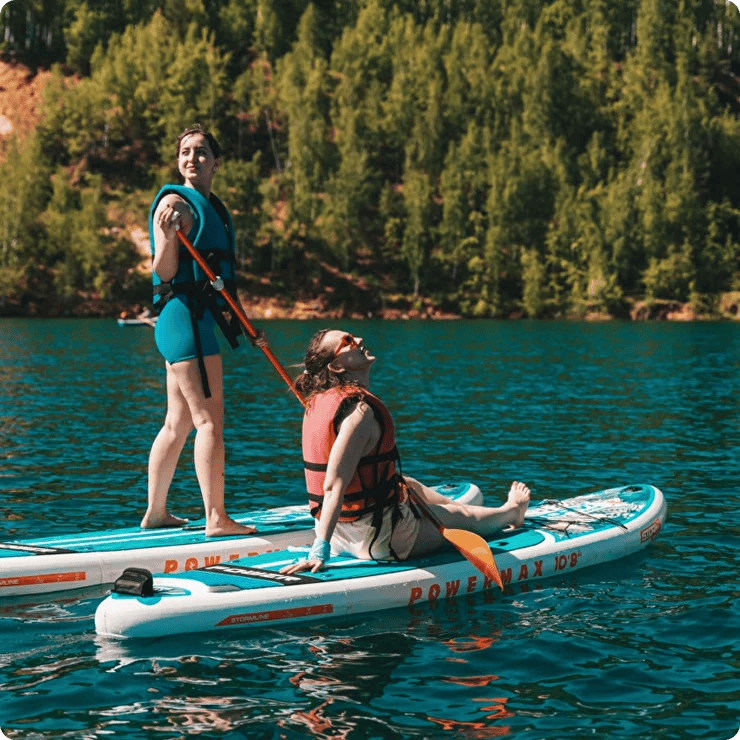
Прокат сапбордов
Пятнадцать досок, готовых к воде каждый день.

Река Истра
Вода течет, и вы движетесь с ней. Это просто, это честно, это живо. Приходите на Истру и почувствуйте.
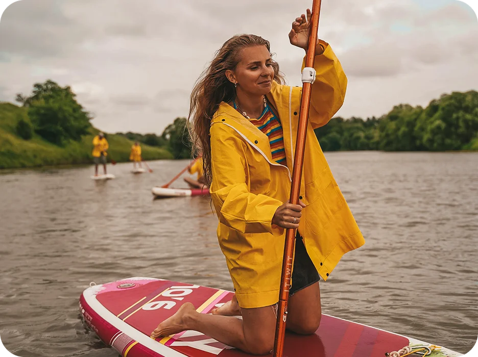
Услуги
Полный набор оборудования для начинающих и опытных, чтобы вы просто выбрали формат и вышли на воду.

Пятнадцать досок, готовых к воде каждый день.
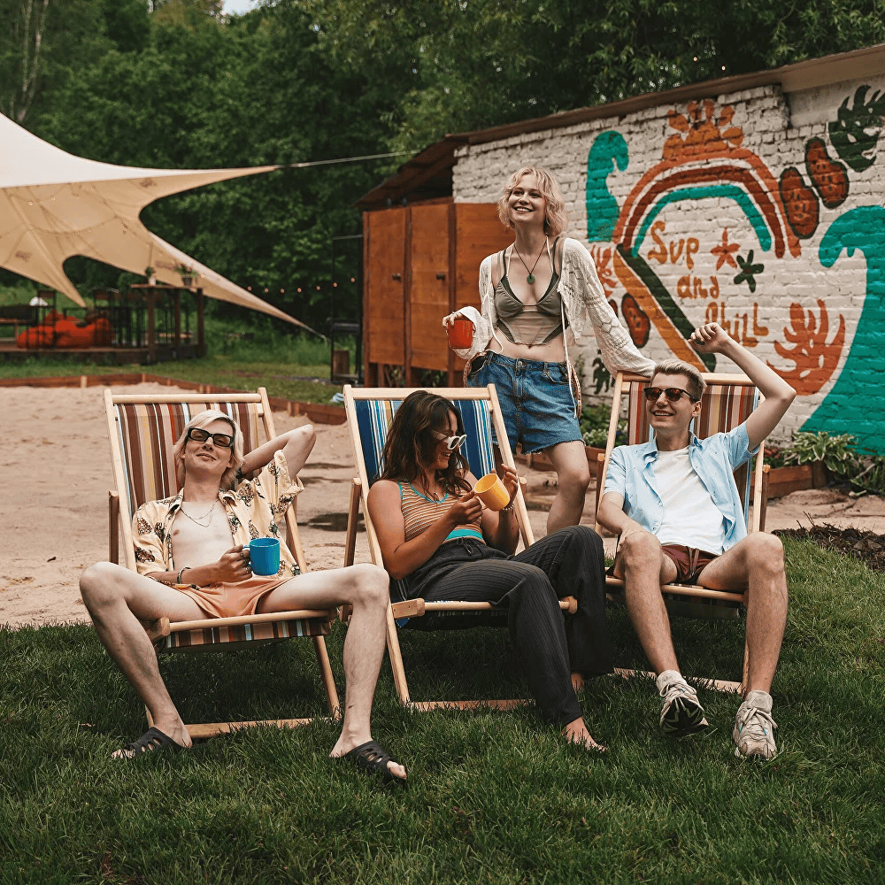
Проводник покажет маршрут и поможет поймать баланс.
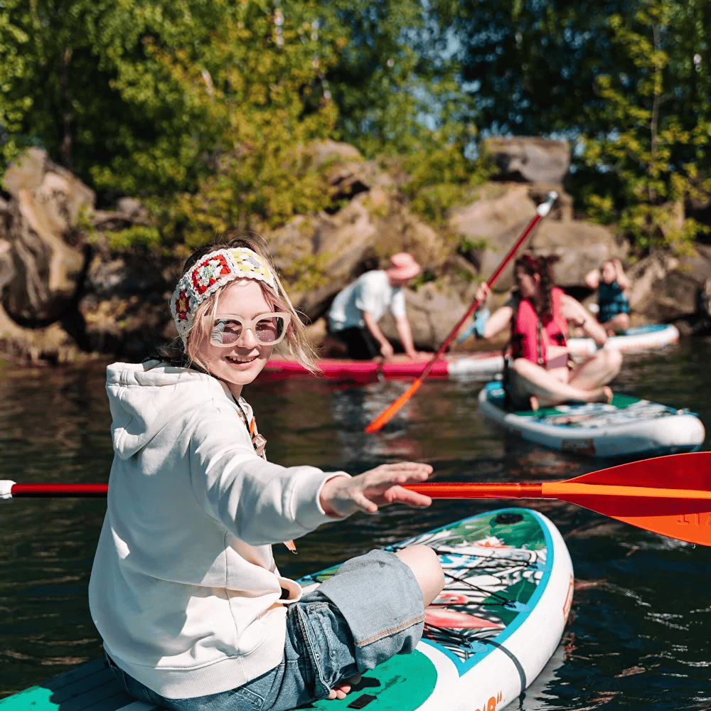
Один, вдвоем или всей компанией, маршрут под настроение.
Расписание
Смотрите свободные дни и занятые окна. Выбирайте дату, которая вам подходит.
Июнь 2026
Нажмите на удобную дату для записи
Маршруты
Готовые форматы для первого выхода, прогулки на выходных и длинного дня на воде.
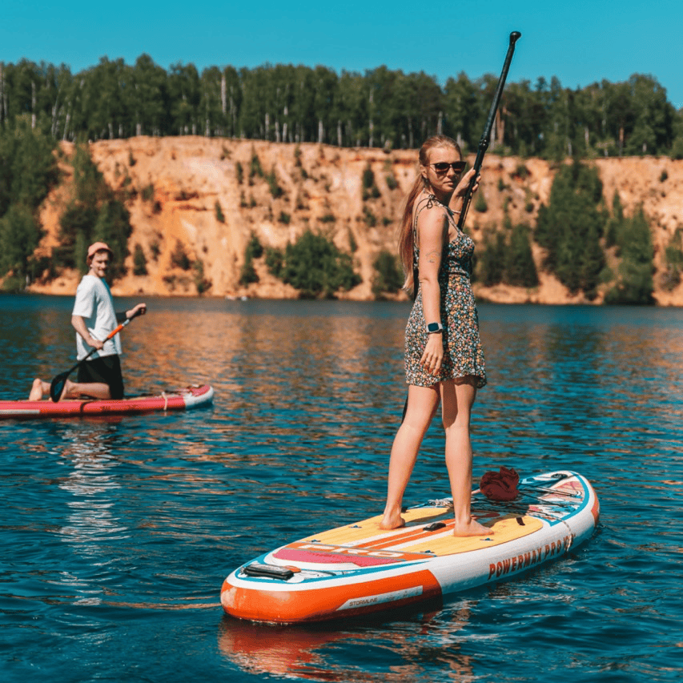
Короткий старт
Спокойный участок реки, базовый инструктаж и мягкий темп для первого опыта.
Выбрать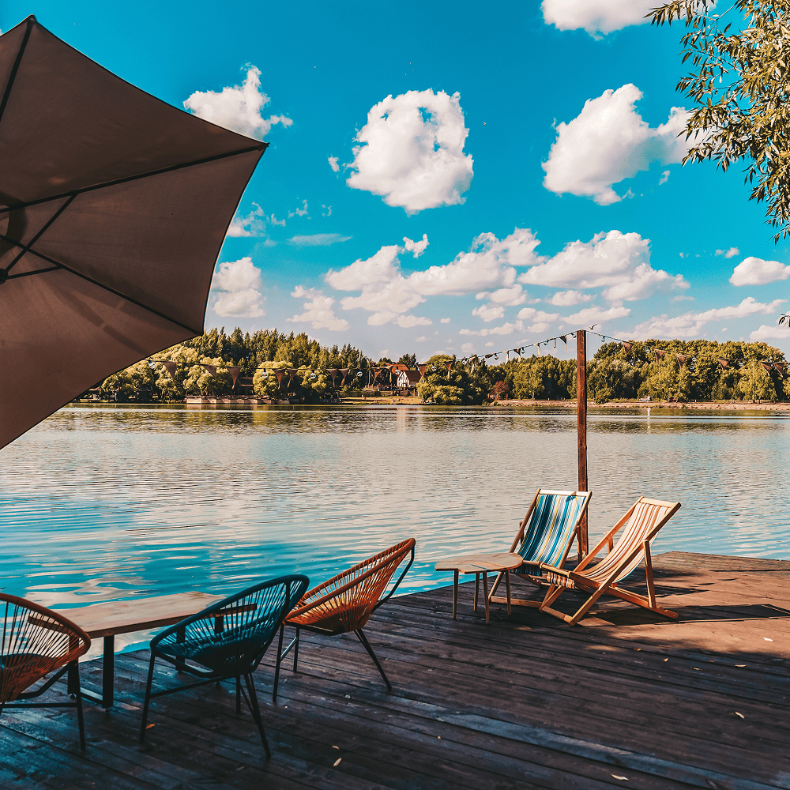
Средний маршрут
Баланс между прогулкой, видом на берег и временем на воде.
Выбрать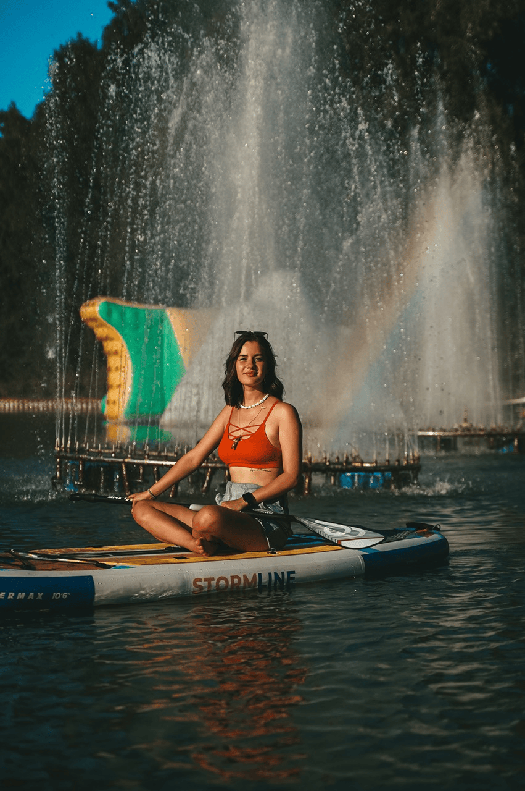
Длинный день
Для тех, кто хочет ритм реки, паузы на берегу и длинную дистанцию.
ВыбратьПреимущества
Истра удобна для коротких поездок из города. Мы помогаем быстро собраться, выбрать доску и выйти на воду без длинной подготовки.
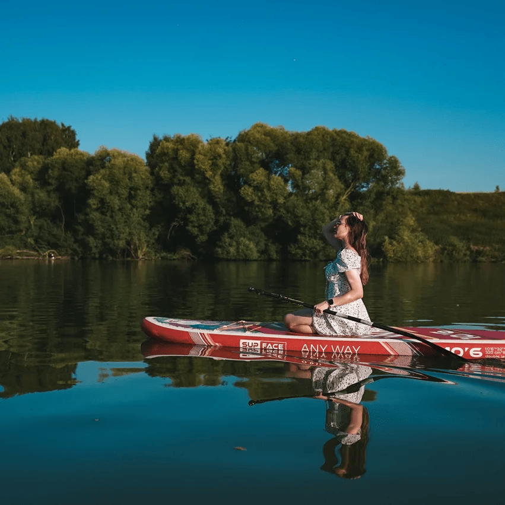
Особенности
Не просто аренда досок, а готовый формат отдыха на реке с продуманной логистикой.
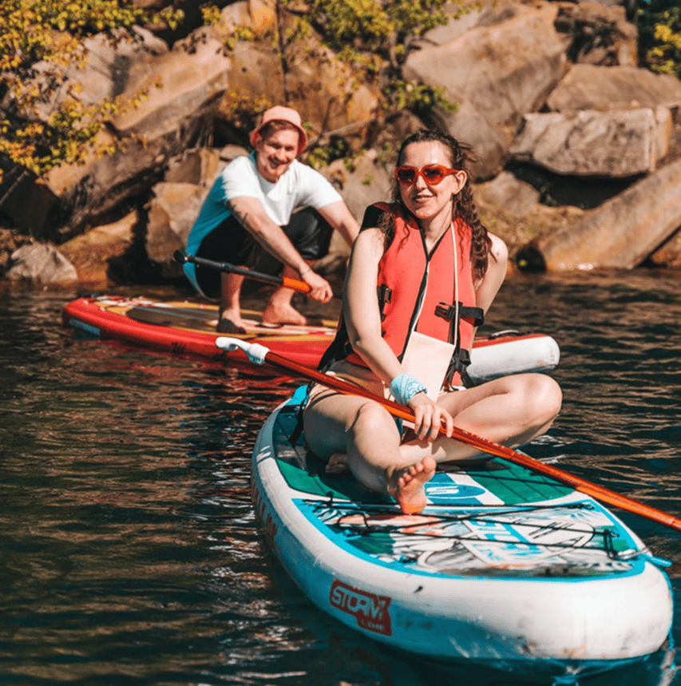
Показываем участки, где берег действительно хочется рассматривать.
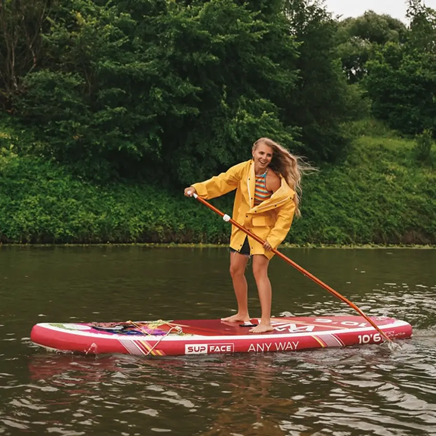
Форматы для друзей, пар и небольших корпоративных команд.
Если нужен спокойный темп, отдельный инструктор и помощь на каждом этапе.
Цифры
Понятные цифры вместо громких обещаний.
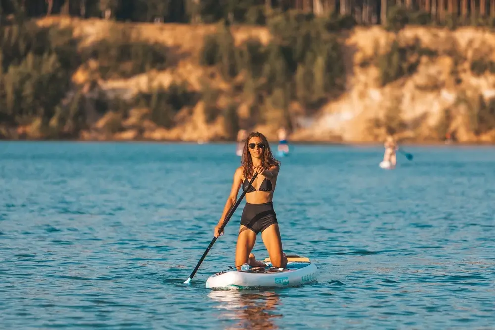
досок доступны ежедневно в высокий сезон
гостей вышли на воду с нашей базой за сезон
часов инструкторского сопровождения и обучения
Коротко о том, за чем люди возвращаются на Истру снова.
Очень спокойный маршрут, приятно, что команда не торопит и реально помогает новичкам.
Брали доски на полдня, все выдали быстро, маршрут объяснили без воды и суеты.
Красивые места, хорошая организация и ощущение, что ты правда отдыхаешь, а не проходишь квест.
Основное перед записью: что брать с собой, как проходит старт и кому подойдет маршрут.
Нет. Для новичков есть короткий инструктаж на берегу и спокойный старт на воде.
Доска, весло, страховочный лиш, жилет и базовый бриф по маршруту.
Да, мы ведем как небольшие группы друзей, так и камерные корпоративные выезды.
Мы заранее предупреждаем о погоде и предлагаем альтернативный слот, если условия некомфортные.
Есть быстрые прогулки на 1,5 часа и длинные форматы на полдня и целый день.
Выберите дату, оставьте контакты и получите подтверждение с деталями по месту старта.
Сравнение
Сравните форматы и выберите прогулку под ваш день, темп и компанию.
| Тариф | Экспресс | Полдня | Полный день |
|---|---|---|---|
| Продолжительность | 1.5 часа | 4 часа | 8 часов |
| Инструктор на воде | Да | Нет | Да |
| Прокат доски включен | Да | Да | Да |
| Спасательный жилет | Да | Да | Да |
| Маршрут по Истре | Нет | Нет | Да |
| Фотопаузы и длинные остановки | Да | Да | Нет |